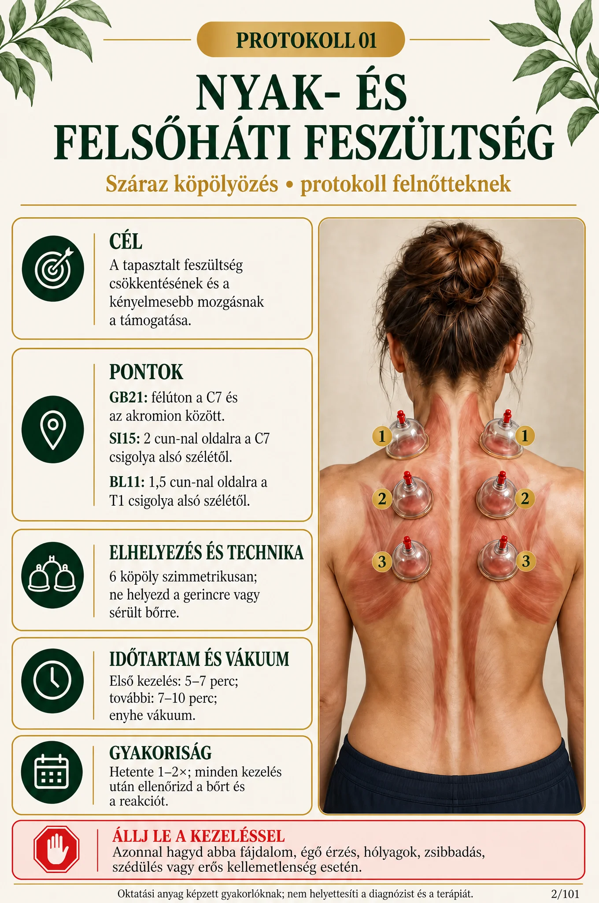
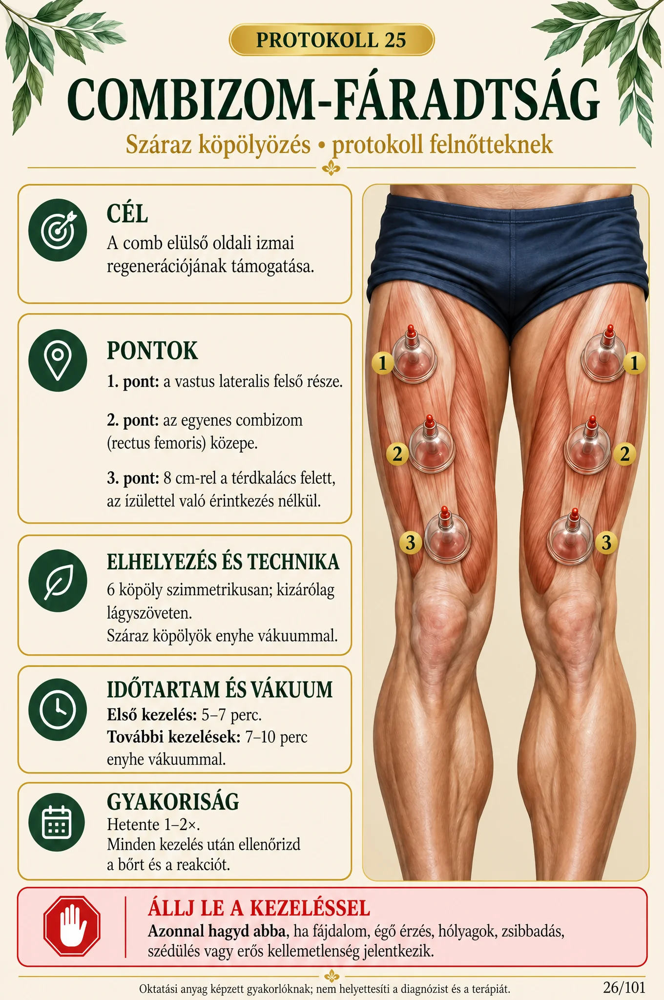
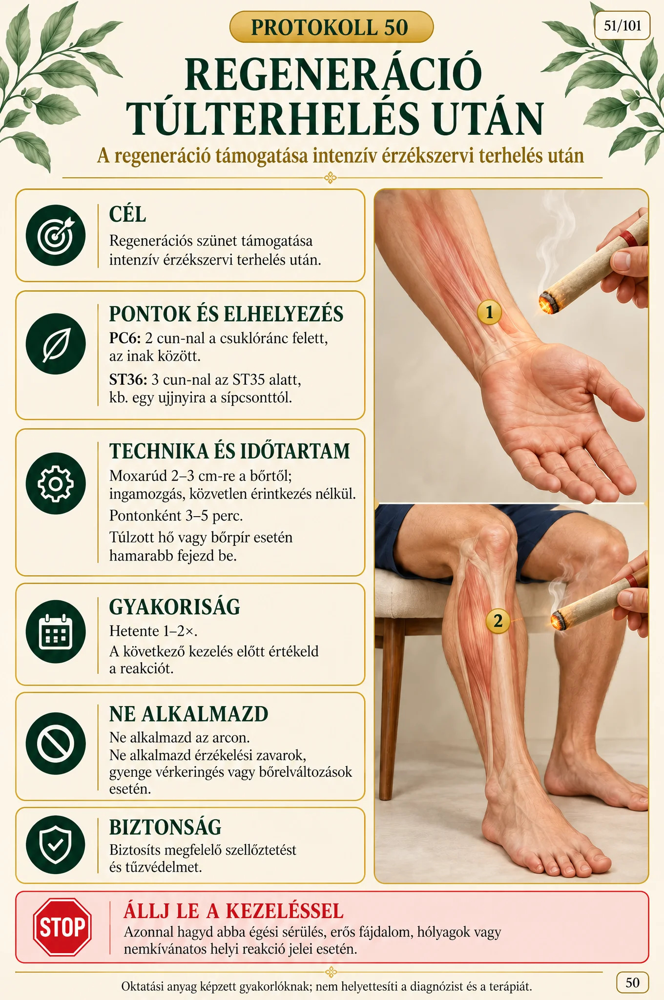
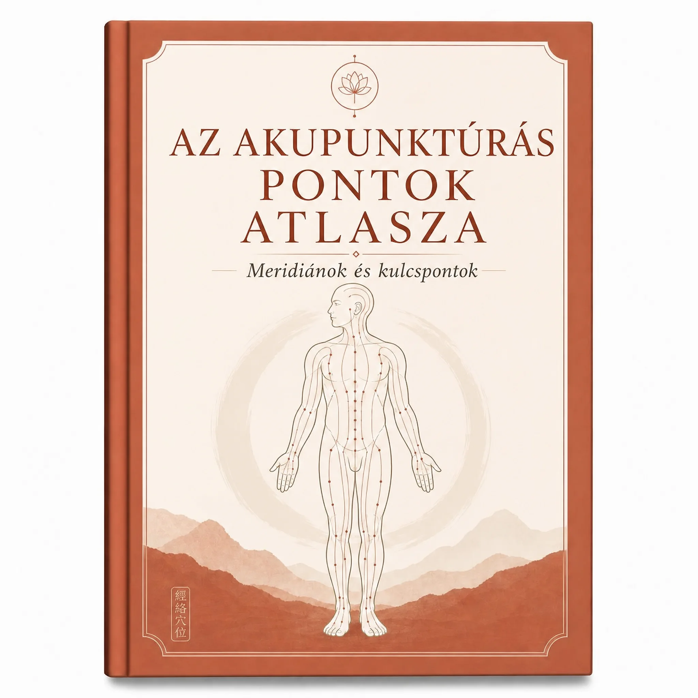
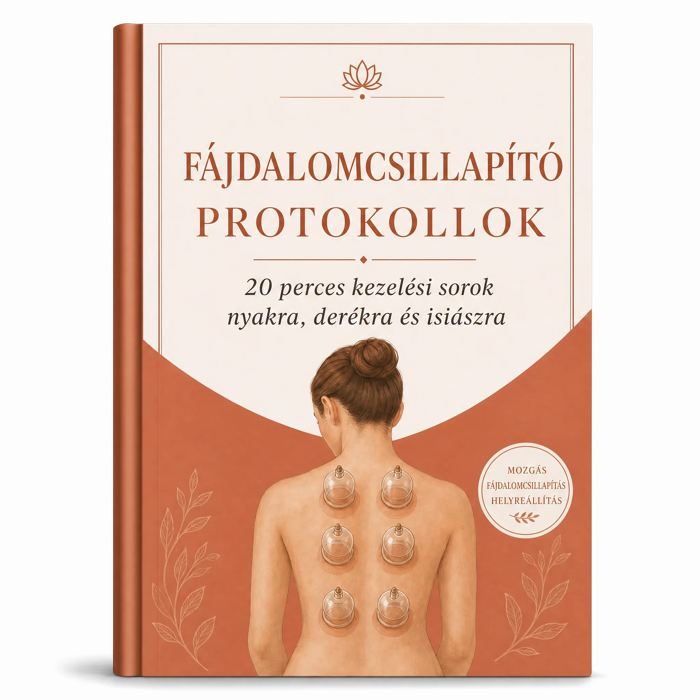

📘 100 protokoll + 4 bónusz · Azonnali hozzáférés PDF-ben
Réka D. épp most rendelte meg
Budapest · épp most
100 köpölyözési protokoll + moxaterápiás technikák
Gyakorlati, képes útmutató a professzionális köpölyözéshez. Nincs több „érzésre” végzett kezelés: pontos kezelési pontok, felhelyezési idők és kezelések közötti időközök fájdalom, stressz és emésztési panaszok esetén – áttekinthetően, azonnal használhatóan.
Egyszeri fizetés · Nincs előfizetés · 7 napos garancia
Ha magadra ismersz az alábbi helyzetekben, nem tehetség hiányzik – hanem egy világos rendszer
- A köpölyöket „érzésre” helyezed fel, és nem vagy biztos benne, hogy a megfelelő helyen vannak.
- A klienseid egy-két napig jobban vannak, de egy hét múlva ugyanazokkal a panaszokkal térnek vissza.
- Nem tudod pontosan, mennyi ideig hagyd rajta a köpölyöket, és mennyi idő múlva ismételd meg a kezelést.
- Kerülöd a moxázást, mert félsz, hogy megégeted a klienst.
- Az interneten csak töredékes és egymásnak ellentmondó információkat találsz.
- Úgy érzed, a kezeléseid többet érhetnének, de hiányzik egy világos munkamenet.
Útmutató, amely lépésről lépésre megmutatja, pontosan mit tegyél
Megnyitod a tartalomjegyzéket, kiválasztod a konkrét panaszt, és minden ott van előtted: berajzolt kezelési pontok, köpölytípus, felhelyezési idő, a moxa használata, ellenjavallatok és ajánlott időközök. Áttekintéssel dolgozol, és a kezelés alatt nem kell semmit keresgélned az interneten.






1 / 6 — csúsztatással megnézheted az útmutató további oldalait
Mit találsz az útmutatóban
100 protokoll lépésről lépésre
Minden panaszhoz: pontos kezelési pontok, köpölytípus, felhelyezési idő és ajánlott kezelési gyakoriság.
Fájdalom, emésztés, stressz és még sok más
Kategóriákba rendezve: mozgásszervek, emésztés, légzés, érzelmi egyensúly és női egészség.
Biztonságos moxázás
Direkt és indirekt technikák, biztonságos távolságok és figyelmeztető jelek érthetően elmagyarázva.
Áttekinthető ponttérképek
Pontos pontábrák, hogy minden kezelésnél magabiztosan dolgozhass.
Ellenjavallatok
Mikor ne végezd el a kezelést, mit tegyél a köpölyözés utáni nyomokkal, és mit magyarázz el előre a kliensnek.
Azonnali és élethosszig tartó hozzáférés
PDF-formátumban – mobilon, tableten vagy kinyomtatva kézikönyvként a rendelődben.
4 bónusz az árban

BÓNUSZ 1 · Akupunktúrás pontok atlasza
Áttekinthető meridiántérkép és a főbb pontok a gyors tájékozódáshoz.

BÓNUSZ 2 · Fájdalomcsillapító protokollok
20 perces kezelési sorozatok nyakra, derékra és isiászra.

BÓNUSZ 3 · Biztonságos moxázás
A hő szabályozása, a helyiség szellőztetése, a felhelyezés időtartama és az égési sérülések megelőzése.

BÓNUSZ 4 · Űrlapok a praxisodhoz
Felvételi kérdőív, beleegyező nyilatkozat és kezelési napló – nyomtatásra készen.
Mit mondanak az útmutatót használó terapeuták
Pontosan a derékprotokoll szerint haladtam. A klienseim a kezelés után sokkal szabadabban mozogtak. Pontosan ilyen struktúrára volt szükségem.
Kovács Anna — Budapest
A moxától mindig tartottam. A biztonsági útmutatásoknak köszönhetően most már magabiztosan használom, és tudom, mit csinálok.
Nagy Lilla — Debrecen
Végre egy világos terv szerint dolgozom, nem érzésre. Sokkal profibbnak hat, és a kliensek jobban megbíznak bennem.
Szabó Márton — Szeged
Kinyomtattam az útmutatót, és a kezelőágy mellett tartom. Minden oldalon egy protokoll a pontokkal, az idővel és az időközökkel – eszerint tényleg könnyű dolgozni.
Tóth Katalin — Miskolc
Este rendeltem, és pár perc múlva már minden ott volt az e-mailemben. A stressz elleni protokollokat már másnap használtam a rendelőben.
Varga Petra — Pécs

Dr. Lena Hoffmann
Hagyományos kínai orvoslás terapeutája · 14 év gyakorlat
A köpölyözésre és a moxázásra specializálódott, több mint 3000 klienssel dolgozott, és kilenc ország terapeutáit képezte. Ez az útmutató azokat a protokollokat foglalja össze, amelyeket naponta használ a praxisában.
Mit kapsz ma
- 100 köpölyözési protokoll + moxaterápiás technikák17 990 Ft
- BÓNUSZ 1 · Akupunktúrás pontok atlasza9 390 Ft
- BÓNUSZ 2 · Fájdalomcsillapító protokollok7 290 Ft
- BÓNUSZ 3 · Biztonságos moxázás5 790 Ft
- BÓNUSZ 4 · Űrlapok a praxisodhoz4 990 Ft
Teljes érték: 45 450 Ft
Ennyi helyett: 17 990 Ft · ma csak ennyit fizetsz:
6 400 Ft
Egyszeri fizetés · Élethosszig tartó hozzáférés
3 egyszerű lépésben kezdhetsz
1. Hozzáférést kapsz
Röviddel a fizetés után e-mailben megkapsz minden anyagot, a bónuszokkal együtt.
2. Kiválasztod a megfelelő protokollt
A tartalomjegyzékben megkeresed a panaszt, és megnyitod a pontokkal, időtartammal és ajánlott időközökkel ellátott kártyát.
3. Alkalmazod, és rögzíted az eredményeket
Követed a lépéseket, feljegyzed az eredményt, és megtervezed a következő kezelést.
Gyakori kérdések
Igen. Minden protokoll végigvezet a bőr előkészítésétől magáig a technikáig – érthetően, bonyolult szakkifejezések nélkül.
100%-ban digitális termék. Semmit nem küldünk postán, és nem kell semmire várnod: a fizetés megerősítése után minden e-mailben megérkezik.
Közvetlenül a fizetés után automatikusan kapsz egy e-mailt az útmutató és mind a 4 bónusz letöltési linkjeivel.
Igen. A PDF mobilra, tabletre és számítógépre is optimalizált. Ki is nyomtathatod a rendelődbe.
Nem. A protokollok elvégezhetők hagyományos szilikon köpölyökkel vagy pumpás köpölyökkel, valamint egyszerű moxakúpokkal vagy moxarudakkal.
Nem. Mind a 4 bónuszt ingyen kapod az ajánlat ideje alatt.
Igen. A fizetés külső, biztonságos és titkosított platformon keresztül zajlik. A kártyaadataidhoz soha nincs hozzáférésünk.
7 napos pénzvisszafizetési garanciát kapsz. Ha az anyag nem váltja be a várakozásaidat, írj nekünk, és visszatérítjük az árát.
A következő kezelésed sokkal jobban megszervezett lehet
Mind a 100 protokollt és a 4 bónuszt most csak 6 400 Ft áron kapod meg.
Hozzáférést kérek